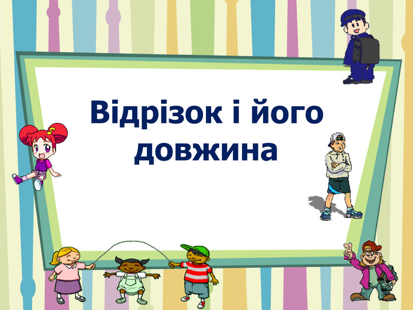

Теорія
Від ліктів та долонь до метричної системи
Сьогодні ми розберемо, що таке відрізок і як його будувати
1. ⇒ Посилання на презентацію2. ⇒ Посилання на відео
Додатковий матеріал
⇒ Посилання на відеоСьогодні ми розберемо, що таке відрізок і як його будувати
1. ⇒ Посилання на презентаціюДодатковий матеріал
⇒ Посилання на відео